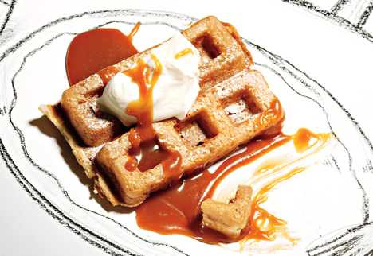

Alex Jones Recipe Page
For all (three) of your recipe needs
Carmel Waffles
Ingredients:
Salted caramel coulis:
- 1/2 cup sugar
- 1/4 cup water
- 1/2 cup heavy whipping cream
- 3 1/2 tablespoons unsalted butter
- 1/2 teaspoon fleur de sel or coarse kosher salt
Waffles:
- 1 3/4 cups all purpose flour
- 2 tablespoons sugar
- 1 1/2 teaspoons baking powder
- 1/2 teaspoon salt
- 1 3/4 cups whole milk
- 2 large eggs
- 6 tablespoons (3/4 stick) unsalted butter, melted, slightly cooled
- Peanut oil
- Powdered sugar
Process:
For salted caramel coulis:
Combine sugar and 1/4 cup water in heavy medium saucepan. Stir over medium-low heat until sugar dissolves. Increase heat and boil without stirring until syrup is deep amber color, occasionally brushing down sides with wet pastry brush and swirling pan, about 10 minutes. Add heavy whipping cream (mixture will bubble vigorously). Stir over low heat until any caramel bits dissolve. Remove from heat. Stir in unsalted butter and fleur de sel or coarse salt. Transfer caramel to small pitcher or bowl. Cool. DO AHEAD: Can be made 1 day ahead. Cover and chill. Stir over low heat just until warm enough to pour before using.
For waffles:
Whisk flour, sugar, baking powder, and 1/2 teaspoon salt in large bowl to blend. Whisk whole milk, 2 large eggs, and melted butter in medium bowl to blend. Add milk mixture to dry ingredients in large bowl and whisk until batter is smooth. DO AHEAD: Can be made 1 hour ahead. Let batter stand at room temperature. Heat waffle iron according to manufacturer's instructions (medium-high heat). Brush grids lightly with peanut oil. Pour enough batter onto each waffle grid to cover generously (about heaping 1/2 cup batter for 4 1/2x3 1/2-inch grid); spread evenly with offset spatula. Close waffle iron and cook until waffles are golden brown and crisp on both sides, 5 to 6 minutes. Cut each waffle in half, forming either rectangles or triangles. Divide waffles among 4 plates. Dust with powdered sugar and drizzle with salted caramel coulis. Serve waffles, passing remaining salted caramel coulis separately.